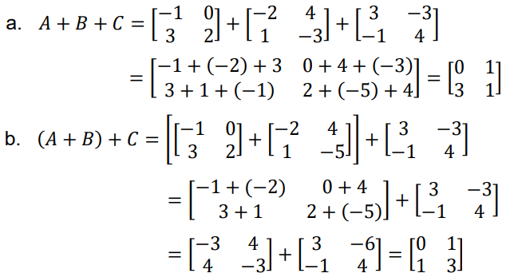
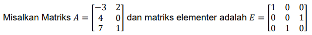

<!DOCTYPE html PUBLIC "-//W3C//DTD XHTML 1.0 Transitional//EN" "http://www.w3.org/TR/xhtml1/DTD/xhtml1-transitional.dtd">
<!--
Template Name: PhotoFolio
Author: <a href="http://www.os-templates.com/">OS Templates</a>
Author URI: http://www.os-templates.com/
Licence: Free to use under our free template licence terms
Licence URI: http://www.os-templates.com/template-terms
-->
<html xmlns="http://www.w3.org/1999/xhtml">
<head>
<title>Aljabar Linier</title>
<meta http-equiv="Content-Type" content="text/html; charset=iso-8859-1" />
<link rel="stylesheet" href="../layout/styles/layout.css" type="text/css" />
</head>
<body id="top">
<div class="wrapper col1">
  <div id="header" class="clear">
    <div class="fl_left">
      <h1><a href="../index.html">Aljabar Linier</a></h1>
      <p>Aksan Taufik</p>
    </div>
    <div class="fl_right"><a href="#"></a></div>
  </div>
</div>
<!-- ####################################################################################################### -->
<div class="wrapper col1">
  <div id="topbar" class="clear">
    <ul id="topnav">
      <li><a href="../index.html">BERANDA</a></li>
      
      </li>
      <li class="active"><a href="portfolio.html">MODUL</a></li>
    </ul>
    
  </div>
</div>
<!-- ####################################################################################################### -->
<div class="wrapper col2">
  <div id="container" class="clear"> 
    <!-- ####################################################################################################### -->
    <div id="portfolio">
      <div class="portfoliocontainer clear">
        <div class="fl_left">
          <h2>KONSEP MATRIKS</h2>
          <p></p>
          <p></p>
        </div>
        <div class="fl_right">
          <ul>
            <li>
              <p class="name">1. NOTASI MATRIKS</p>
              <p class="name">Suatu matriks biasanya dinotasikan dengan Kapital dan ditulis secara umum sebagai berikut</p>
              <p></p>

              <p class="name">A adalah notasi matriks sedangkan 𝑎𝑚𝑛 adalah elemen matriks. Deretan horisontal elemenelemen disebut baris dan deretan vertikal disebut kolom. Indeks 𝒎 menunjukkan nomor baris 
                elemen berada, indeks 𝒏 menunjukkan nomor kolom elemen berada.</p>
              </p>𝑎11 = elemen baris pertama kolom pertama.</p>
              </p>𝑎12 = elemen baris pertama kolom kedua.</p>
              </p>𝑎1𝑛 = elemen baris pertama kolom ke-n.</p>
              </p>𝑎21 = elemen baris kedua kolom pertama.</p>
              </p>𝑎22 = elemen baris kedua kolom kedua.</p>
              </p>𝑎2𝑛 = elemen baris kedua kolom ke-n.</p>
              </p>𝑎𝑚1 = elemen baris ke-m kolom pertama.</p>
              </p>𝑎𝑚2 = elemen baris ke-m kolom kedua.</p>
              </p>𝑎𝑚𝑛 = elemen baris ke-m kolom ke-n.</p>
            </li>
            <li>
              <p class="name">2. Ordo Matriks</p>
              <p class="name">Ordo atau ukuran suatu matriks ditentukan oleh banyaknya baris dan kolom. Bila matriks 
                A mempunyai m baris dan n kolom, maka dikatakan matriks itu mempunyai ordo m x n</p>
              </p>Contoh:</p>
              <p></p>
              
            </li>
            <li class="name">(JENIS DAN SIFAT-SIFAT MATRIKS)</p>
              <p class="name">1. Matriks Baris</p>
              <p class="name">Matriks Baris adalah matriks yang terdiri dari satu baris 
              </p>Contoh :</p>
              </p>𝑃 = (4 7)</p>
              </p>𝑄 = (1 2 5)</p>
              
            </li>
            <li>
              <p class="name">2. Matriks kolom</p>
              <p class="name">Matriks kolom adalah matriks yang terdiri dari satu kolom</p>
            </p>Contoh:</p>
            <p></p>
            </li>
            <li>
              <p class="name">3. Matriks Nol</p>
              <p class="name">Matriks nol , adalah matriks yang semua elemennya nol</p>
            </p>Contoh:</p> 
            <p></p>
            </p>Sifat-sifat :</p>
            </p>a. 𝐴 + 0 = 𝐴, jika ukuran matriks 𝐴 = ukuran matriks 0</p>
            </p>b. 𝐴 ∗ 0 = 0, begitu juga 0 ∗ 𝐴 = 0</p>
        
            </li>
            <li class="name">(KESAMAAN MATRIKS)</p>
              <p class="name">Dua buah matriks dikatakan sama jika memenuhi dua syarat sebagai berikut:
                1. Mempunyai ordo yang sama
                2. Elemen-elemen yang seletak nilainya sama</p>
              <P class="name">Perhatikan matriks dibawah ini</P>
              <p></p>
              <p class="name">elemen-elemen pada matriks A dan matriks B yang seletak nilainya selalu sama, 
                maka dikatakan 𝐴 = B</p>  
             
              </li>
              <li>
                <p class="name">MATRIKS TRANSPOSE</p>
                <p class="name">Matriks transpose, adalah matriks yang terbentuk dengan mengganti baris menjadi kolom dan 
                  kolom menjadi baris (notasinya 𝐴
                  t
                  ).</p>
                  <p></p>
                  <p></p>
                  </p>Sifat-sifat transpose matriks yaitu:</p>
                  </p>a) (𝐴 + 𝐵)
                  t = 𝐴
                  t + 𝐵
                  t</p>
                </p>b) (𝐴
                t
                )
                t = A</p>
              </p>c) (𝐾𝐴)
              t = 𝐾𝐴
              t
              , 𝑘 adalah konstanta</p>
            </p>d) (𝐴𝐵)
            t = 𝐵
            t 𝐴
            t</p>

              </li>    
            </li>
          </ul>
        </div>
      </div>
      <!-- ########### -->
      <div class="portfoliocontainer clear">
        <div class="fl_left">
          <h2>Aljabar Matriks</h2>
          <p></p>
          <p></p>
        </div>
        <div class="fl_right">
          <ul>
            <li>
              <p class="name">1. PENJUMLAHAN MATRIKS</p>
              <p class="name">Jika matriks A dan B memiliki ordo yang sama, maka jumlah matriks A dan B adalah matriks 
                yang diperoleh dengan menjumlahkan setiap elemen matriks A dengan elemen matriks B
                yang bersesuaian (seletak). Jumlah matriks A dan B dinotasikan dengan A + B.
                Dua matriks A dan B dapat dijumlahkan menjadi matriks C (ditulis C = A + B) jika dan 
                hanya jika:</p>
              </p>1. Ordo C = ordo A = ordo </p>
              </p>2. 𝑐𝑖𝑗 = 𝑎𝑖𝑗 + 𝑏𝑖𝑗 untuk semua 𝑖 ∈ baris dan 𝑗 ∈ kolom</p>
              <p></p>
              </p>a. A + B</p> 
              </p>b. B + A</p>
              </p>Pembahasan :</p>
              <p></p>
              <p></p>
            </p>Dari contoh terlihat oleh kita bahwa matriks A + B = B + A, dimana matriks A dan B
            memiliki ordo yang sama. Dengan demikian, pada penjumlahan matriks berlaku sifat 
            komutatif.</p>
            </p>Apabila A dan B adalah dua matriks yang berordo sama maka A + B = B + A. Sifat 
            tersebut dinamakan sifat komutatif penjumlahan dua matriks.</p>
            </p>Bukti : Misalkan = (𝑎𝑖𝑗)𝑚×𝑛
            , 𝐵 = (𝑏𝑖𝑗)𝑚×𝑛
            , dan 𝐴 + 𝐵 = 𝐶 = (𝑐𝑖𝑗)𝑚×𝑛
            , dengan 𝑐𝑖𝑗 =
            𝑎𝑖𝑗 + 𝑏𝑖𝑗. Oleh karena elemen-elemen matriks A maupun matriks B adalah bilangan 
            real yang mengikuti pada hukum komutatif, maka 𝑐𝑖𝑗 = 𝑎𝑖𝑗 + 𝑏𝑖𝑗 = 𝑏𝑖𝑗 + 𝑎𝑖𝑗. 
            Sehingga dapat dikatakan 𝐴 + 𝐵 = 𝐵 + 𝐴 
             (terbukti). 
            Lalu, apakah sifat asosiatif berlaku dalam penjumlahan matriks? Untuk dapat 
            menjawab pertanyaan itu coba simaklah contoh berikut. </p>
            </p>Contoh :</p>
            <p></p>
          </p>Tentukanlah : a. A + B + C b. (A + B) + C  c. A + (B + C)</p>
        </p>Pembahasan: </p>
        <p></p>
        <p></p>
      </p>Dari Contoh di atas dapat kita ketahui bahwa pada penjumlahan matriks berlaku 
      sifat asosiatif.</p>
    </p>Apabila A, B, dan C adalah tiga matriks yang berordo sama, maka 𝐴 + 𝐵 + 𝐶 = 𝐴 + (𝐵 +
    𝐶) = (𝐴 + 𝐵) + 𝐶 . Sifat tersebut dinamakan sifat asosiatif penumlahan matriks.</p>
  </p>Bukti : Misalkan 𝐴 = (𝑎𝑖𝑗)𝑚×𝑛
  , 𝐵 = (𝑏𝑖𝑗)𝑚×𝑛
  , dan 𝐶 = (𝑐𝑖𝑗)𝑚×𝑛
  . Oleh karena elemenelemen matriks A, B, dan C merupakan bilangan real yang mengikuti pada hukum 
  assosiatif, maka berlaku hubungan-hubungan: 𝑎𝑖𝑗 + 𝑏𝑖𝑗 + 𝑐𝑖𝑗 = 𝑎𝑖𝑗 + (𝑏𝑖𝑗 + 𝑐𝑖𝑗) = (𝑎𝑖𝑗 + 𝑏𝑖𝑗) + 𝑐𝑖𝑗,sehingga dapat dikatakan 𝐴 + 𝐵 + 𝐶 = 𝐴 + (𝐵 + 𝐶) = (𝐴 + 𝐵) + 𝐶
  (terbukti).</p>
  
  


              
            </li>
            <li>
              <p class="name">2. PENGURANGAN MATRIKS</p>
              <p class="name">Telah kita ketahui bahwa jika a dan b dua bilangan real, maka berlaku : 
                𝑎 − 𝑏 = 𝑎 + (−𝑏) dengan – 𝑏 adalah lawan dari b. 
                karena setiap matriks mempunyai matriks lawan, maka sama seperti pada bilangan 
                real, pada matriks pun berlaku:</p>
              </p>𝐴 − 𝐵 = 𝐴 + (−𝐵)</p>
                Dengan kata lain, pengurangan matriks A oleh matriks B dilakukan dengan cara 
                menjumlahkan amtriks A dengan lawan dari matriks B.</p>
              </p>Contoh :</p>
              <p></p>
            </p>Pembahasan :</p>
            <p></p>
          </p>Dari Contoh di atas dapat kita ketahui bahwa dalam pengurangan matriks tidak 
          berlaku sifat komutatif dan asosiatif.</p>

              
            </li>
            <li class="last">
              <p class="name">PERKALIAN DENGAN MATRIKS SKALAR</p>
              <p class="name">Jika k adalah suatu bilangan skalar dan 𝐴 = (𝑎𝑖𝑗 ) maka matriks 𝑘𝐴 = (𝑘𝑎𝑖𝑗 ) yaitu suatu matriks 
                𝑘𝐴 yang diperoleh dengan mengalikan semua elemen matriks A dengan k. Mengalikan matriks 
                dengan skalar dapat dituliskan di depan atau dibelakang matriks. Misalnya [𝐶] = 𝑘[𝐴] = [𝐴]𝑘
                dan (𝑐𝑖𝑗 ) = (𝑘𝑎𝑖𝑗 )
                Jika 𝑘 adalah bilangan real (scalar), maka perkalian scalar dengan matriks 𝐴 = [𝑎𝑖𝑗]𝑚×𝑛
                :</p>
              </p>Jika A, B, C adalah matriks m x n, k1 dan k2 adalah scalar maka:</p>
              <p></p>
            </p>a. 𝑘1𝐴 = 𝐴𝑘1</p>
          </p>b. (𝑘1𝑘2
          )𝐴 = 𝑘1
          (𝑘2𝐴)</p>
        </p>c. 1𝐴 = A</p>
      </p>d. (−1)𝐴 = −A</p>
    </p>e. 𝑘1
    (𝐴 + 𝐵) = 𝑘1𝐴 + 𝑘1B</p>
  </p>f. (𝑘1 + 𝑘2
  )𝐴 = 𝑘1𝐴 + 𝑘2𝐴</p>
</p>Diketahui matriks 𝐴 = [
−2 5
4 3
] , tentukan hasil dari 3𝐴.
</p>Jawab : </p>
<p></p>
              
            </li>
            <li>
              <p class="name">PERKALIAN MATRIKS DENGAN MATRIKS</p>
              <p class="name">1. Perkalian matriks dengan matriks umumnya tidak komutatif.</p>
            </p>2. Syarat perkalian adalah jumlah banyaknya kolom pertama matriks sama dengan jumlah 
                banyaknya baris matriks kedua.</p>
              </p>3. Jika matriks A berukuran 𝑚 × 𝑝 dan matriks 𝑝𝑥𝑛 maka perkalian 𝐴 × 𝐵 adalah suatu 
                matriks 𝐶 = (𝑐𝑖𝑗 ) berukuran mxn dimana
                𝑐𝑖𝑗 = 𝑎𝑖1𝑏1𝑗 + 𝑎𝑖2𝑏2𝑗 + 𝑎𝑖3𝑏3𝑗 + … … … … … … … . + 𝑎𝑖𝑝𝑏𝑝𝑗</p>
              </p>Jika A matriks ukuran 𝑚 × 𝑝 dan 𝐵 matriks ukuran 𝑝 × 𝑛, maka perkalian matriks A dan B:</p>
              <p></p>
            </p>untuk semua 𝑖 = 1, 2, … , 𝑚; 𝑗 = 1, 2, … , 𝑝.</p>
            </p>AB = C</p>
            <p></p>
            </p>𝑐𝑖𝑗 = 𝑎𝑖1𝑏1𝑗 + 𝑎𝑖2𝑏2𝑗 + ⋯ + 𝑎𝑖𝑝𝑏𝑝𝑗 = <p>
            </p>
          </p>Perkalian matriks yaitu mengalikan elemen baris ke-i matriks A dengan elemen kolom ke-j 
          matriks B dan menjumlahkannya. Dimensi hasil perkalian matriks :</p>
        </p>Dimensi matriks hasil perkalian</p>
      </p>


            </p>Beberapa Hukum Perkalian Matriks :</p> 
            </p>1. Hukum Distributif, 𝐴 ∗ (𝐵 + 𝐶) = 𝐴𝐵 + 𝐴C</p> 
            </p>2. Hukum Assosiatif, 𝐴 ∗ (𝐵 ∗ 𝐶) = (𝐴 ∗ 𝐵) ∗ C</p> 
            </p>3. Tidak Komutatif, 𝐴 ∗ 𝐵  B * A</p> 
            </p>4. Jika 𝐴 ∗ 𝐵 = 0, maka beberapa kemungkinan
              (i) 𝐴 = 0 dan 𝐵 = 0
              (ii) 𝐴 = 0 atau 𝐵 = 0
              (iii) 𝐴 ≠ 0 dan 𝐵 ≠ 0</p> 
            </p>5. Bila 𝐴 ∗ 𝐵 = 𝐴 ∗ 𝐶, belum tentu 𝐵 = C</p> 
            </p>Contoh :</p> 
            </p>1. Diketahui Matriks – matriks dibawah ini, Hitunglah 𝐴 × B</p>
            <p></p> 
            </li>
            <li>
              <p class="name">2. Tentukan hasil kali K x M, jika matriks seperti dibawah ini :</p>
              <p></p>
            </p>Jawab :</p>
            <p></p>
              </li>
          </ul>
        </div>
      </div>
      <!-- ########### -->
      <div class="portfoliocontainer clear">
        <div class="fl_left">
          <h2>TRANSFORMASI ELEMENTER</h2>
          <p></p>
          </p>
          <p></p>
        </div>
        <div class="fl_right">
          <ul>
            <li>
            </p>Pada elemen-elemen suatu matriks dapat dilakukan transformasi atau pertukaan atau 
            perpindahan menurut baris dan kolom
            Transformasi elementer pada sebuah matrik tidak mengubah baik orde maupun bentuk 
            matriks.</p>             
              <p class="name">1. Pertukaran tempat baris ke-i dan baris ke-j atau pertukaran tempat kolom ke-i dan kolom 
                ke-j dan ditulis 𝐻𝑖𝑗(𝐴) untuk transformasi baris dan 𝐾𝑖𝑗(𝐴) untuk transformasi kolom.
                </p>Contoh :</p>
                </p>a. Pertukaran baris</p>
                <p></p>
                </p>𝐻12(𝐴) berarti menukar baris ke-1 matriks A dengan baris ke-2</p>
                <p></p>
              </p>𝐻32(𝐴) berarti menukar baris ke-3 matriks A dengan baris ke-2</p>
            </p>b. Pertukaran kolom</p>
            <p></p>
          </p>𝐾23(𝐴) berarti menukar kolom ke-2 matriks A dengan kolom ke-3</p>
          <p></p>
        </p>𝐾31(𝐴) berarti menukar kolom ke-3 matriks A dengan kolom ke-1</p>
            </li>
            <li>
              <p class="name">2. Perkalian setiap unsur baris ke-i dengan suatu bilangan skalar ℎ(ℎ ≠ 0), ditulis 𝐻𝑖
                (ℎ)
                (𝐴)
                dan Perkalian setiap kolom kolom ke-i dengan skalar 𝑘(𝑘 ≠ 0), ditulis 𝐾𝑖
                (𝑘)
                (𝐴).</p> 
              </p>Contoh :</p>
              <p></p>
            </p>𝐻2
            (−2)
            (𝐴) berarti setiap baris ke 2 dikali dengan (−2)</p>
            <p></p>
          </p>𝐾3
          (
          1
          2
          )
          (𝐴) berarti setiap kolom ke 3 dikali dengan (
          1
          2
          )
          </p>
          <p></p>
                
              
            </li>
            <li class="last">
              <p class="name">MATRIKS EKUIVALEN</p>
              <p class="name">Dua buah matriks A dan B disebut ekuivalen (𝐴~𝐵) apabila matriks A diperoleh dari hasil 
                transformasi matriks B, atau matriks B diperoleh dari hasil mentransformasi matriks A dengan 
                transformasi elementer terhadap baris atau kolom. transformasi elementer hanya terjadi pada 
                baris saja disebut elementer baris, sedangkan jika transformasi terjadi pada kolom saja disebut 
                elementer kolom.
                </p>
              </p>a. Matriks ekuivalen (Transformasi terhadap baris)</p>
            </p>Contoh 1 :</p>
            <p></p>
          </p>A dan B adalah ekuivalen baris karena jika kita mempertukarkan baris ke-1 dengan baris 
          ke-2 pada matriks A atau 𝐻12(𝐴), maka akan didapat matriks B.</p>
            </li>
            <li>
              <p class="name">b. Matriks ekivalen (Transformasi Terhadap kolom)</p>
            </p>Contoh 1:</p>
            <p></p>
          </p>A dan B adalah ekuivalen kolom karena jika kita mempertukarkan kolom ke-1 dengan kolom
          ke-2 pada matriks A atau 𝐾12(𝐴), maka akan didapat matriks B.</p>
              
            </li>
            <li>
            </p>MATRIKS ELEMENTER</p>
              <p class="name">𝐸𝑛×𝑛 disebut matriks elementer jika matriks tersebut diperoleh dari matriks Identitas 
                dengan melakukan operasi baris elementer tunggal (hanya melakukan operasi baris elementer 
                1 kali)
                Syarat operasi bilangan elementer yaitu :</p>
              </p>• Mengalikan suatu baris dengan bilangan tak nol</p>
            </p>• Menjumlahkan suatu baris dengan hasil kali suatu baris lain dengan bilangan real kecuali 
              nol</p>
            </p>• Menukarkan sembarang dua buah garis</p>
          </p>Contoh :</p>
        </p> Diketahui matriks</p>
        <p></p>
      </p>Jika E suatu matriks berordo 𝑛 × 𝑛, dan A matriks berordo 𝑚 × 𝑛 maka EA hasilnya akan sama 
      dengan matriks yang diperoleh dari A dengan melakukan operasi baris elementer yang sesuai</p>
    </p>Contoh :</p>
    <p></p>
  </p>Maka penyelesaiannya adalah</p>
  <p></p>
              
            </li>
            <li class="last">
              <p class="name">Jika operasi baris elementer dilakukan terhadap matriks identitas I maka menghasilkan matriks 
                elementer E, maka terhadap operasi baris kedua dimana jika dilakukan terhadap E, akan 
                menghasilkan Matriks Identitas I kembali</p>
                <p></p>
              
            </li>
          </p></p>
        </p>.. </p>
          </ul>
        </div>
      </div>
      <!-- ########### --> 
    </div>
    <!-- ####################################################################################################### -->
    <div class="pagination">
      <ul>
        
    </div>
    <!-- ####################################################################################################### --> 
  </div>
</div>
<!-- ####################################################################################################### -->
<div class="wrapper">
  <div id="footer" class="clear">
    <div class="footbox">
      <h2>Daftar Pustaka</h2>
      <p>Purcell, J Edwin (1987), Kalkulus dan Geometri Analitis. Gramedia Jakarta
        anton, Howard, Elementary Linear Algebra, 11th Edition, John Wiley & Sons. Inc, New Your, 
        NY, 2013.</p>
      <p></p>
      </div>
    <div class="footbox">
      <h2>Daftar Isi</h2>
      <ul>
        <li><a href="#">Notasi Matriks</a></li>
        <li><a href="#"></a>JENIS DAN SIFAT-SIFAT MATRIKS</li>
        <li><a href="#"></a>KESAMAAN MATRIKS</li>
        <li><a href="#"></a>Penjumlahan Matriks</li>
        <li><a href="#"></a>Pengurangan Matriks</li>
        <li><a href="#"></a>Perkalian dengan matriks skalar</li>
        <li><a href="#"></a>Perkalian matriks dengan matriks</li>
        <li><a href="#"></a>Matriks Ekuivalen</li>
        <li class="last"><a href="#">Matriks ekivalen (Transformasi Terhadap kolom)</a></li>
      </ul>
    </div>
    <div class="footbox">
      <h2>Alamat</h2>
      <ul>
        <li><a href="#">JL.Sepakat II Kelurahan Cilangkap</a></li>
        <li><a href="#">Kec. Cipayung Jakarta Timur </a></li>
        <li><a href="#">Kode Pos 13870</a></li>
      </ul>
    </div>
    <div class="footbox last">
      <h2>Media Sosial</h2>
      <ul>
        <li><a href="https://www.facebook.com/profile.php?id=100091804042757">Facebook profile</a></li>
        <li><a href="#">Instagram Account</a></li>
      </ul>
      <h2>Kontak Saya</h2>
      <ul>
        <li><strong class="title">Tel:</strong><br />
          088213729364</li>
        <li><strong class="title">Email:</strong><br />
          <a href="#">aksantaufik38@gmail.com</a></li>
      </ul>
    </div>
  </div>
</div>
<!-- ####################################################################################################### -->
<div class="wrapper">
  <div id="copyright" class="clear">
    <p class="fl_left">Copyright &copy; 2023 - All Rights Reserved - <a href="#">Aljabar Linier</a></p>
    <p class="fl_right">Website Masih Dalam Tahap Pengembangan<a target="_blank" href="http://www.os-templates.com/" title="Free Website Templates"></a></p>
  </div>
</div>
</body>
</html>